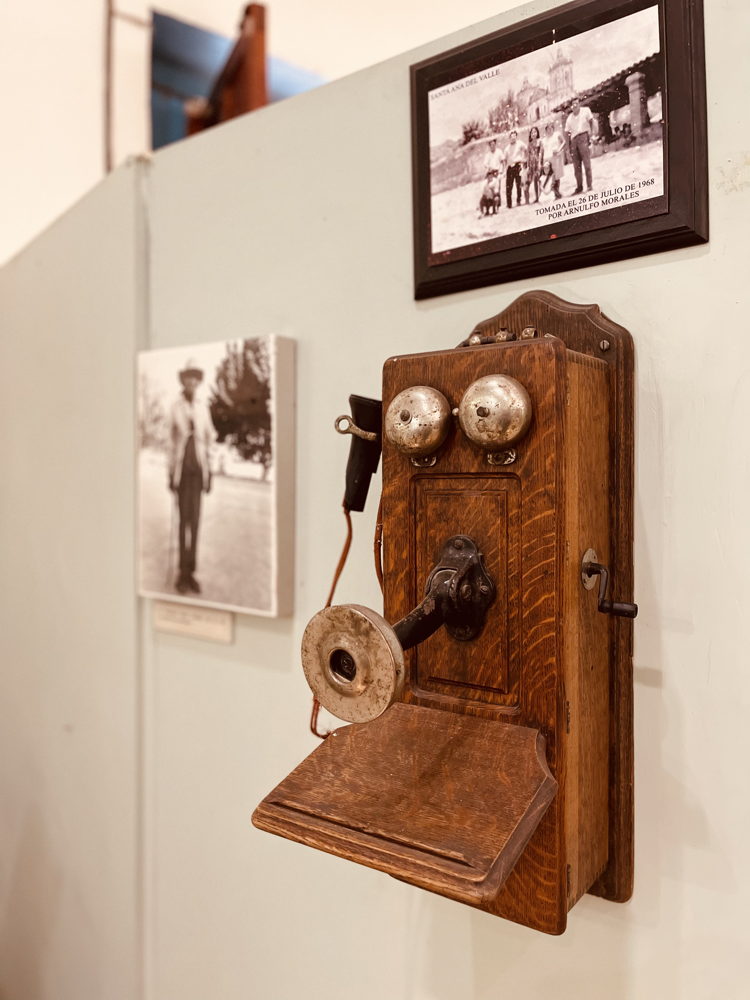
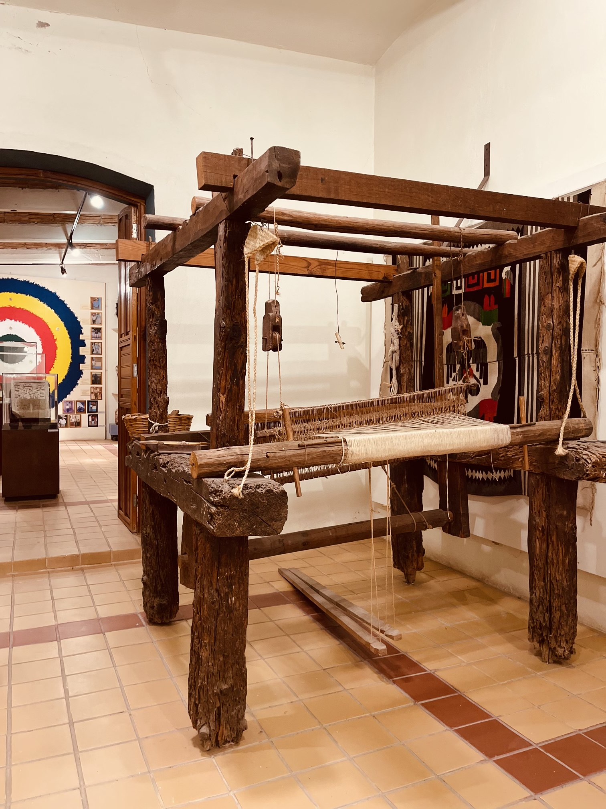
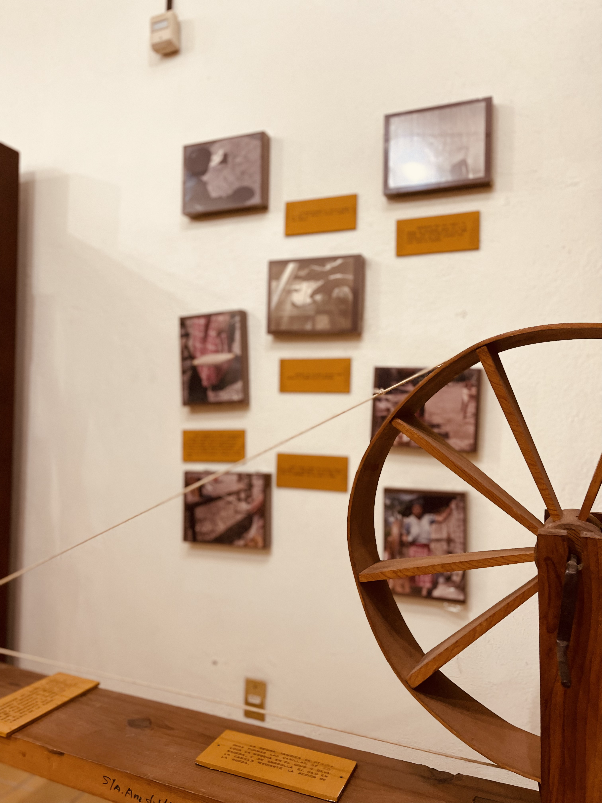
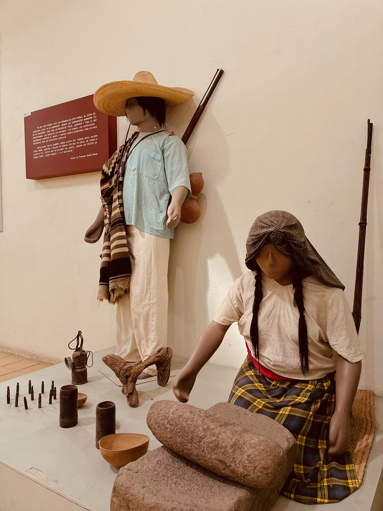
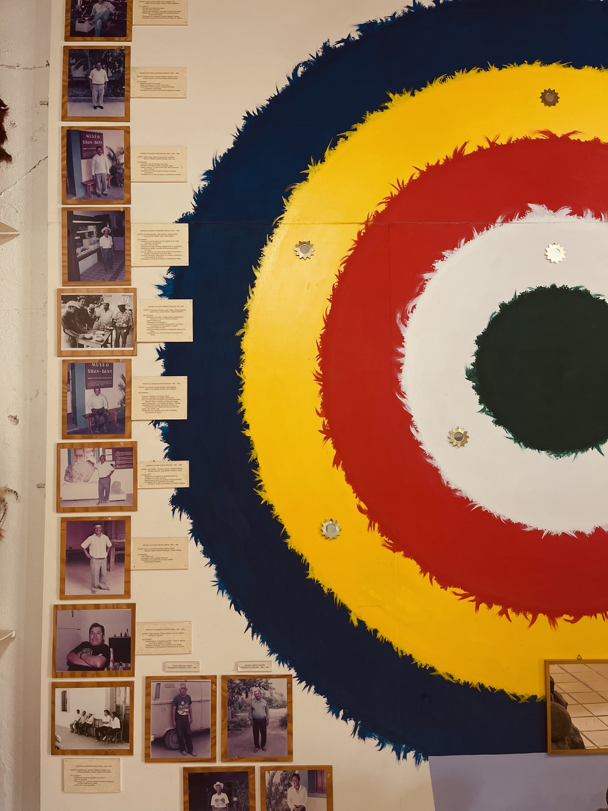

Es una experiencia única para explorar la cultura local de la región. Ofrecemos una variedad de exposiciones y eventos educativos para ayudar a todos los visitantes a comprender y disfrutar la cultura del lugar. Ven y descubre la rica historia y tradiciones de la región de Santa Ana Del Valle.
Visita nuestras salas por separado y encuentra las explicaciones con audio o escritas si es que algo no te quedó del todo claro.
Antropología Revolución mexicana TradicionesVisita nuestro recorrido por la zona arqueológica de Santa Ana del Valle.
¡Click aquí!Nuestra tienda alberga tesoros auténticos que reflejan la esencia de nuestra comunidad. Desde el suave abrazo de nuestros tapetes tejidos a mano, hasta el mágico sabor del mezcal artesanal, encontrarás una selección especial de productos que capturan la riqueza de nuestras raíces. Al visitarnos, no solo adquieres un pedacito de nuestra cultura, sino que también apoyas directamente a la comunidad local y contribuyes a la preservación de nuestro valioso patrimonio.